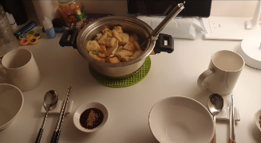

22.05.01

내 칭구들이 놀러왔다!
닝닝이가 같이 마시라며 아아를 사다주었다
고마워😋
22.05.02
사진 찍는다니까 이불 뒤집어쓰는 아가
김다시 영화관!
정말정말 무서운 숨바꼭질을 보았다😶🌫️

저녁으로 김밥과 오모리 라면을 먹었어요
닝우는 내가 입에 가득 뭘 넣고 먹는 걸 좋아한다ㅎㅎ
22.05.03

사랑이 담겨 있는 비빔밥입니다
포브스 선정 비빔밥 먹을 때 섹시한 사람 1위 : 최보빈
너희 방금 밥 먹고 어딜 그렇게 가~
오늘은 한강 나들이 날이에요!
닝닝이와 한강 자전거 데이트를 나갔다
날씨가 정말이지 좋았다
나는 자전거 타면서 핸드폰을 못 써서
닝닝이를 찍은 사진이 별로 없다...
닝닝이는 자전거를 타면서 휴대폰을 자유자재로 쓴다
날씨도 좋고 풍경도 멋졌다
초여름을 마음껏 느낄 수 있었다
도주하는 김도롱
기분 좋은 바람이 불어서 행복했다
활짝 웃는 내 옆에는 항상 닝닝이가 있다
우리는 자전거를 타고 배가 너무고파
맛집이라는 육돈식당을 찾아갔다
정말 맛있었지만 추후 그 옆집의 단골이 된다
포브스 선정 술 마시고 섹시한 사람 1위 : 최보빈
22.05.04
자기는 내가 뭘 먹을 때 찍어 보내는 걸 무척 좋아한다
22.05.05
내가 더 행복한데🥰
전이 먹고 싶어서 집 앞에서 해물파전을 포장하고
집에서 배추전을 했다!
그리고 우리는 느린마을 막걸리만 먹을 수 있는 입이 된다
자기가 출근할 때 수박 주스를 마시고 싶어했다
그래서 과일 가게에서 수박을 몽땅 훔쳐왔다
22.05.06
어묵탕을 그닥 좋아하지 않던 닝우는
김다시를 만나고 어묵탕을 잘 먹게 된다!
닝우는 연예인이 맞았다
이렇게 예쁜데 연예인 아닐리가
닮은 연예인으로 박보검이 나왔다
그런데 난 닝우가 더 멋지다고 소신발언 하겠다
22.05.08
언니가 안산 집에 왔다...?
22.05.09
안산에서 먹은 게가 너무 맛있어서
언니랑 먹으려고 또 사왔다😋
내가 약을 끊은지 어언 1000시간이 되었다
언니는 축하한다며 피자에 초를 꽂아주었다
우리는 미니언을 보며 축하 파티를 했다
이렇게 장난치면서 노는 게 좋다
22.05.11
볼따구에 누가 그랬지🫣
100일 기념 선물 하나가 도착했다
우리가 그려져있는 잠옷이다😊
22.05.12
내가 고추전이 먹고 싶다고 해서 집에서 같이 만들었다!
앞으로 꼭 사먹기로 했다🤙
그래도 정말 맛있었지~
22.05.13

우리 자기는 손으로 하는 건 다 잘한다
그래서 당구도 잘 치고...또...
뚜껑 아니고 방패라구 한다
22.05.15
빠른지 느린지 모르게 100일이 지나갔다
우리는 강원도 영월로 100일 기념 여행을 떠났다
도착해서 주천묵집이라는 식당에서 밥을 먹었다
모든 음식이 다 맛있었다!
?? : 손님 음식으로 장난치시면 안 돼요~
닝우 : 저희 애가 100일이에요
나비 날개가 생긴 닝우
우리는 박물관에 들려 미디어 전시를 보았다
닝우가 좋아했으면 좋겠다고 생각했다
별을 보고 사진을 찍는 닝우를 찍는 나
한반도 지형 앞에서 부부처럼 사진을 찍었다
영월역 앞인데요 이거 맞아요...?
사진 찍을 때 어색해지는 우리
사랑으로 어색함을 극복했다
라디오스타 촬영지에 놀러갔다!
우리 닝우는 목소리가 좋아서 라디오를 하면 안 된다
나만 들을 거다
가방 도둑이야!
박물관에서 영상을 찍어보는 여행 부부
별마루 천문대에 올라가 다정한 사진을 찍었다
사랑하는 분위기의 하늘이다
숙소에 와서 100일 축하 영상을 찍었다
배터리가 없어서 안절부절하며 빠르게 축하를 마치려 하는데
닝우가 소원 안 빌어...? 했다 너무 귀여웠다
22.05.16
아침이 밝았다! 조식을 먹고 넓은 들판으로 나왔다
곤돌라를 타고 올라가는 동안 풍경을 보는 닝우

안녕하세요 제 이름은 도롱이구요 사랑 받는 걸 좋아해요
물을 좋아하는 우리는 초여름부터 물놀이를 시작했다
둥둥 떠다니며 닝우랑 노는 것은 정말 좋다
너무 배고파서 대충 찾아보고 들어간 짱구네
이 날 이후 우리는 정선에 이 고기를 먹으러 가려 한다
된장밥 기절이었다
든든하게 밥을 먹고 다시 집으로 향하는 우리
가다가 카페에 들러 사진을 함께 봤다
행복한 100일 여행이었다
22.05.19
자기가 호떡을 좋아해서 호떡을 사먹었다!
진짜 호떡을 좋아하는 모습이다
일 가기 전 잠깐 들른 거라 아쉬운 마음을 뒤로하고 자기를 보내줬다
구구절절 고백을 받았다 행복했다
22.05.20
자기가 예쁜 가방을 커플로 사주었다 고마워😊
미스터트롯을 지나 미스트롯2를 보는 우리
22.05.22
떡꼬치를 먹고 싶어하는 자기와 떡꼬치 상영관을 열었다!
살인자의 쇼핑목록을 보며 맛있는 야식을 먹었다😋
드디어 방문한 숙성명가님
22.05.24
내 마음을 담은 수박이라 하트 모양이었다!
22.05.26
자고 일어난 닝닝이 머리가 까치 꼬리 같았다
22.05.27
오잉 익숙한 곳인데...

닝닝이의 음성 집에 놀러갔다! 김진또씨도 같이 갔다
고기도 먹고 노래방도 하며 놀았다
투표도 잊지 않고 했다
22.05.28
김진또씨가 우리 아지트를 놀러왔다!
닝닝이를 기다리며 무서운 게임을 했다
진짜 무서워서 소리를 많이 질렀다
닝닝이가 일을 마치고 돌아와서 늦은 저녁을 해먹었다😋
22.05.29
물회 흘림 먹방
22.05.30
닝우와 사랑의 불시착을 정주행 하며 5월을 마무리했다 !